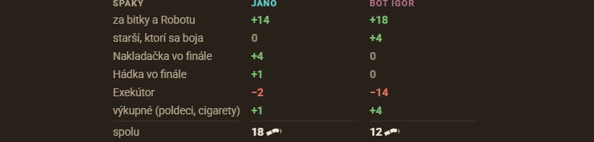
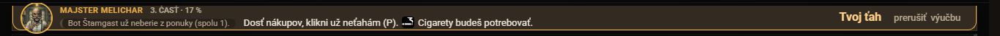
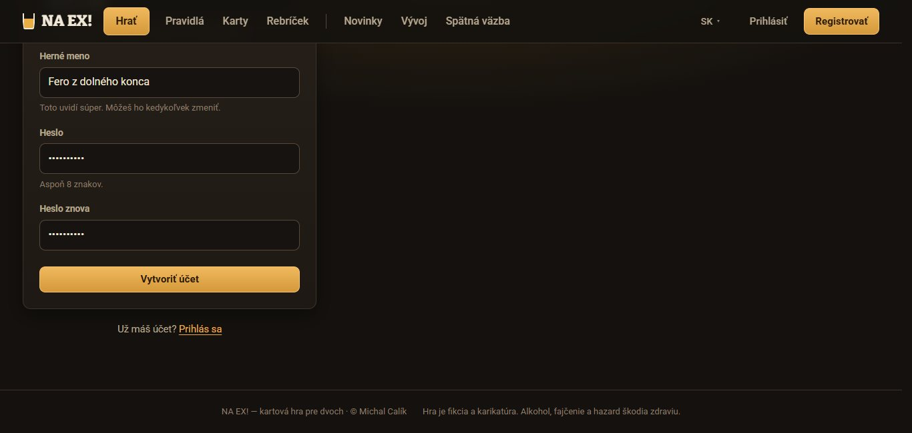
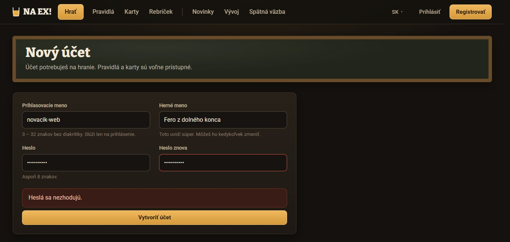
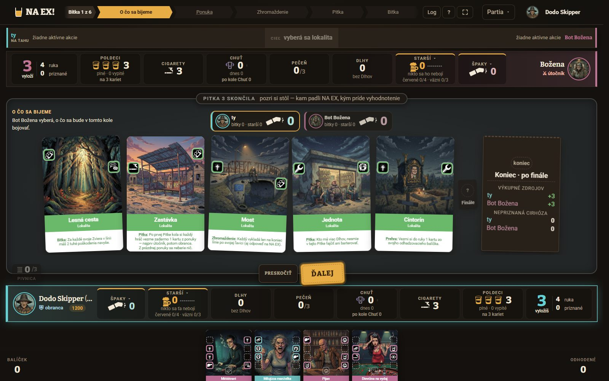
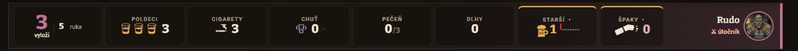
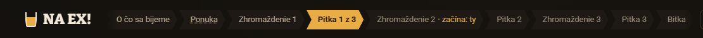
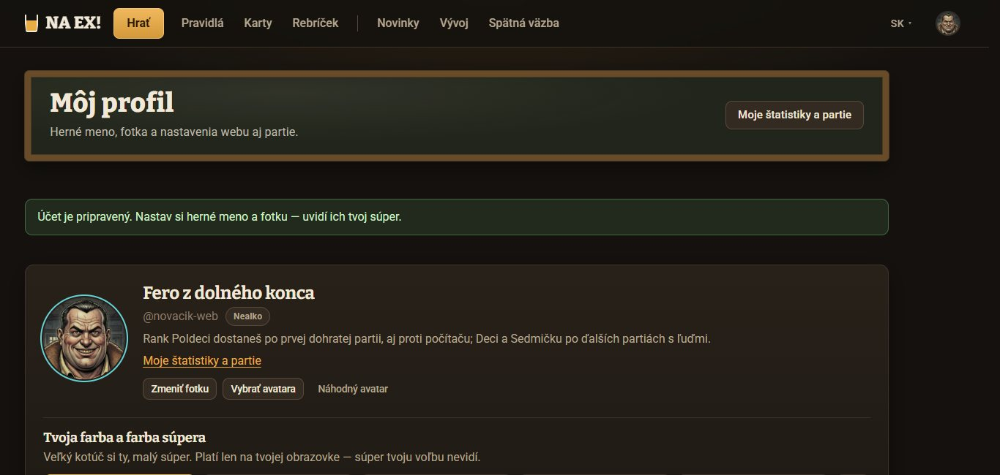
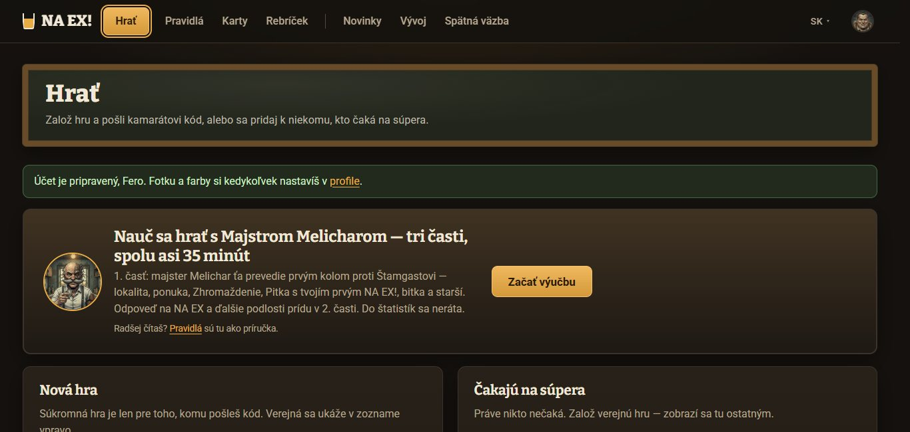

Záťaždopad vysokýpráca stredná
Branie z ponuky, 1600×1000 a 1366×650 · Pitka, 1600×1000 a 1366×650 · Pitka – náhľad NA EX, 1600×1000 a 1366×650


NA EX! v12.6, sada v58 (commit b5775de2), lokálny server, 20. 11. 2026. Štyria inšpektori prešli stôl, výučbu a web hráča pri 1920×1080, 1600×1000, 1512×860, 1440×800 a 1366×650. Každý návrh má mock.
Čo je na stole navyše, dvakrát alebo príliš dlhé; inventár fáz a „čistý stôl“.
Zmerané UI chyby pri piatich rozlíšeniach, UX problémy a nejednotné prvky stola.
Prvé minúty nového hráča: koľko textu, krokov a klikov, kde sa zasekne.
Domov, Hrať, Pravidlá, Karty, Profil, Novinky, Vývoj, Spätná väzba, prihlásenie.
Branie z ponuky, 1600×1000 a 1366×650 · Pitka, 1600×1000 a 1366×650 · Pitka – náhľad NA EX, 1600×1000 a 1366×650
Dohraná partia proti botovi: Bot Igor 31 + 4 + 21 + 5 − 9 = 52, spolu 58 — chýba 6 za hádku vo finále · Koniec hry (okno Výhra / Prehra), všetky rozlíšenia · Detail partie — ten istý účet


#119, #129, #136, #161, #166 (ťah hráča), #47, #86, #148, #159 — 1366×650 · #56, #108, #159 — 1600×1000 · zdvojené: #20, #30, #31, #44, #97, #101, #132 (1600), #10, #81, #95, #104 (1366)


/registracia, 1366×650 (pri vyšších oknách je hláška aj tlačidlo vidno)


Medziobrazovka Zhromaždenie, každé kolo · Tooltip dlaždice Poldeci · Medziobrazovka Bitka vo finále · Dlaždica Poldeci („na 1 kariet“), odložený pas („výhra +2 špakov“)


Pitka, čakám s NA EX — obsah 1938 px, miesto 930–1330 px, všetkých 5 rozlíšení · Pitka naraz od 2. kola (1665 px) · Branie z ponuky, prvý ťah (1598 px) · Náhľad NA EX na kartu


koniec 3. časti → „Hrať proti počítaču“, 1600×1000


/partia/:id, všetky rozlíšenia (partia dohraná výhrou strachom proti botovi)


Každá fáza, oba pulty a bar, 1600×1000 aj 1366×650


Hlavička partie, bitka s 3 Pitkami (9 krokov), 1440×800 a 1600×1000, účet s dlhším menom · 1920, 1512 a 1366 px sú v poriadku


#93 i-remiza2 a kvíz #94 q-remiza2


/registracia → /profil?novy=1, všetky rozlíšenia


| Id | Nález | Šošovka | Dopad | Práca |
|---|---|---|---|---|
| S-01 | Účet špakov na konci hry nesedí — chýba riadok „Hádka vo finále“ Dohraná partia proti botovi: Bot Igor 31 + 4 + 21 + 5 − 9 = 52, spolu 58 — chýba 6 za hádku vo finále · Koniec hry (okno Výhra / Prehra), všetky rozlíšenia · Detail partie — ten istý účet |
Chyba | vysoký | malá |
| S-02 | Pokyn nad stolom sa nezmestí ani pri 1920 px — čo mám urobiť, je za trojbodkou Pitka, čakám s NA EX — obsah 1938 px, miesto 930–1330 px, všetkých 5 rozlíšení · Pitka naraz od 2. kola (1665 px) · Branie z ponuky, prvý ťah (1598 px) · Náhľad NA EX na kartu |
UX | vysoký | malá |
| S-03 | Pri troch Pitkách zmizne z hlavičky „Bitka 3 z 4“ Hlavička partie, bitka s 3 Pitkami (9 krokov), 1440×800 a 1600×1000, účet s dlhším menom · 1920, 1512 a 1366 px sú v poriadku |
Chyba | vysoký | malá |
| S-04 | Koniec hry na 1366×650: tlačidlá sú pod okrajom okna Koniec hry, 1366×650 — obsah okna 721 px, vidno 613 px, tlačidlá od y = 679 · Potvrdené v dohranej partii (okno Prehra, 1366×650): riadok „spolu“ je napoly za okrajom, tlačidlá pod ním |
UX | vysoký | malá |
| S-08 | Pečiatka momentu leží cez okno a rekapituláciu — zakryje aj skóre bitky Rekapitulácia bitky v partii: „BOMBA ×4“ zakrýva súperovo skóre pri 1366×650, pás kariet pri 1920×1080 · Okno „Pasuješ“ po autopase — 1600×1000 aj 1366×650 · Rekapitulácia Pitky (ukážka): „PRESVEDČENIE“ cez nadpis, aj cez medziobrazovku Bitka |
Chyba | vysoký | malá |
| Z-01 | Pokyn nad stolom je odsek, ktorý sa nezmestí Branie z ponuky, 1600×1000 a 1366×650 · Pitka, 1600×1000 a 1366×650 · Pitka – náhľad NA EX, 1600×1000 a 1366×650 |
Záťaž | vysoký | stredná |
| Z-02 | Texty tvrdia pravidlo, ktoré už neplatí (pas, finále) Medziobrazovka Zhromaždenie, každé kolo · Tooltip dlaždice Poldeci · Medziobrazovka Bitka vo finále · Dlaždica Poldeci („na 1 kariet“), odložený pas („výhra +2 špakov“) |
Chyba | vysoký | malá |
| Z-03 | Vyhodnotenie Pitky ukazuje prázdne riadky a legendu k značkám, ktoré na ňom nie sú Vyhodnotenie Pitky, 1600×1000 (po každej Pitke) |
Záťaž | vysoký | malá |
| Z-04 | Dlaždice pultov a bar vypisujú nuly a „nič“ Každá fáza, oba pulty a bar, 1600×1000 aj 1366×650 |
Záťaž | vysoký | malá |
| Z-05 | Šesť potvrdzovacích okien medzi koncom Pitky a ďalším rozhodnutím Koniec kola: od „Skončiť Pitku“ po výber lokality ďalšieho kola, všetky rozlíšenia |
Vylepšenie | vysoký | stredná |
| V-01 | Stránkovanie bubliny stráca a zdvojuje vety — pokyn ťahu zmizne #119, #129, #136, #161, #166 (ťah hráča), #47, #86, #148, #159 — 1366×650 · #56, #108, #159 — 1600×1000 · zdvojené: #20, #30, #31, #44, #97, #101, #132 (1600), #10, #81, #95, #104 (1366) |
Chyba | vysoký | stredná |
| V-02 | Biely tip „Odhad bitky“ ostane visieť cez stôl desiatky krokov 2. časť, #88–#100, 1600×1000 (visel najmenej 13 krokov) · reprodukované na #53 |
Chyba | vysoký | malá |
| V-03 | Prvá partia po výučbe začne starou „Pitka 3 skončila“ a tabuľkou z výučby koniec 3. časti → „Hrať proti počítaču“, 1600×1000 |
Chyba | vysoký | stredná |
| V-04 | Pás pokynov stola beží popri Melicharovi a protirečí mu každý ťah hráča (50 krokov) a ťahy Štamgasta; príklady #12, #13, #19, #28, #29, #36, #56 |
Záťaž | vysoký | malá |
| V-05 | Objem: 178 krokov, 5 070 slov, 205× „ďalej“ — čo škrtnúť a presunúť scenár prva-hra.json; najhustejšia 2. časť (2 434 slov, 101× ďalej, sľub 15 min) · séria bez ťahu hráča #86–#99: 14 krokov, 564 slov, 32 klikov |
Záťaž | vysoký | stredná |
| V-06 | Ťah hráča s výkladom na 2–3 strany: pokyn nie je na strane, ktorú hráč vidí 17 ťahov pri 1600×1000, 19 pri 1366×650: #43, #56, #75, #82, #100, #115, #126, #129, #131, #141, #148, #153, #155, #159, #166, #167… |
UX | vysoký | stredná |
| V-07 | Po chybe svieti zasa POTVRDIŤ; cieľ ťahu a cesta späť nesvietia #19 (karta na opačnom konci), #56 (druhá karta ťahu), #82 (svieti 6 kariet), 1366×650 aj 1600×1000 |
UX | vysoký | stredná |
| V-08 | Kroky #88–#93 komentujú odpovede a hádku, keď už je na stole niečo iné 2. časť, koniec druhej Pitky: #87 → okno Pitka 2/2 → okno Bitka 5 : 0 → #88–#93 |
UX | vysoký | veľká |
| V-10 | Lupa staršieho pri delení strachu: 130–170 slov cez susedov aj cez POTVRDIŤ #36 (1. časť), #100, #141; pri 1366×650 zakryje štyroch starších, pečiatku POTVRDIŤ a pol baru |
Záťaž | vysoký | malá |
| V-24 | Návštevník klikne „Nauč sa hrať“ a pristane na „Vitaj späť“ — prihlásenie Domov → hlavné tlačidlo výučby, neprihlásený, 1366×650 |
UX | vysoký | stredná |
| V-28 | Výučba učí staré pravidlo remízy: „rozhodujú Dlhy“ (od v12.6 najprv hádka) #93 i-remiza2 a kvíz #94 q-remiza2 |
Chyba | vysoký | malá |
| W-01 | Registrácia: chybová hláška je mimo okna, tlačidlo pod zlomom /registracia, 1366×650 (pri vyšších oknách je hláška aj tlačidlo vidno) |
Chyba | vysoký | malá |
| W-02 | Po registrácii skončí nový hráč v nastaveniach, nie pri hre /registracia → /profil?novy=1, všetky rozlíšenia |
UX | vysoký | malá |
| W-03 | Hlavná výzva Domova posiela nového návštevníka na „Vitaj späť“ / → tlačidlo „Nauč sa hrať s Majstrom Melicharom“ (návštevník), všetky rozlíšenia · /pravidla → „Začať výučbu“ (návštevník) |
UX | vysoký | malá |
| W-04 | Pozvánka do hry nepovie, že je to pozvánka /hra?kod=ABCD (návštevník), všetky rozlíšenia |
UX | vysoký | malá |
| W-05 | Stránka Hrať: 153 slov a založenie hry pod zlomom /hra (nový hráč), 1366×650 a 1440×800 — „Nová hra“ pod zlomom · /hra, 1920×1080 — zmestí sa, text rovnaký |
Záťaž | vysoký | stredná |
| W-06 | Môj profil: 619 slov a 3264 px nastavení na jednej stránke /profil, všetky rozlíšenia (pri 1366×650 päť obrazoviek) |
Záťaž | vysoký | stredná |
| W-07 | Detail partie ukazuje surovú šablónu „{2:vyhral|vyhrala|vyhráva}“ /partia/:id, všetky rozlíšenia (partia dohraná výhrou strachom proti botovi) |
Chyba | vysoký | malá |
| W-08 | Profil po prvej partii s botom vyzerá prázdny /hrac/:id (vlastný profil po partii proti počítaču), všetky rozlíšenia |
UX | vysoký | malá |
| S-05 | Pečiatka „PASOVAŤ → +3“ nemá ikonu karty Zhromaždenie, pečiatka pasu (v12.6: pas doberie karty), všetkých 5 rozlíšení |
Chyba | stredný | malá |
| S-06 | Popis koncov línie pod lokalitou sa rozpadne na dva riadky Zhromaždenie s kartou v línii, Pitka, zastavený stôl po Pitke — 1440 až 1920 px (pri 1366×650 sa popis neukazuje) |
Chyba | stredný | malá |
| S-07 | Štítok pôvodu v ponuke zakrýva efekt karty, na Nástrojoch ho nevidno Branie z ponuky, všetkých 5 rozlíšení |
Chyba | stredný | malá |
| S-09 | Dlaždica Špaky orezáva ikonu a odznak odhadu pri dvojcifernom počte Pult hráča aj súpera, špaky ≥ 10 s odznakom „+15“ / „−1“ — 1366×650 aj 1600×1000 |
Chyba | stredný | malá |
| S-10 | Hlavička predbieha: „Bitka 2 z 4“ a „Finále“ už počas vyhodnotenia predošlej bitky Rozdeľovanie hádky a Nakladačky po 1. bitke: „Bitka 2 z 4“ — všetkých 5 rozlíšení · Zastavený stôl po poslednej Pitke 3. bitky: odznak už hlási „Finále“ · Súhrn po bitke 1 |
Chyba | stredný | malá |
| S-11 | Cena na pečiatke: raz slovo, raz piktogram, tri rôzne poradia Zhromaždenie: „POTVRDIŤ −1 POLDECI“ · Branie: „−1 [cigareta] → HOTOVO“; Zhromaždenie: „−1 [cigareta] → záverečná“, „PASOVAŤ → +3“; Pitka: dvojriadkové „−1 → karta / FAJČIŤ“ |
Nekonzistencia | stredný | malá |
| S-12 | Súper je raz „Bot Darina“, raz „Darina“; ja raz „ty“, raz „inšpektor“ „Bot Darina“: horný bar, nástenka, štítky ponuky, pokyny, okno Koniec hry · „Darina“: pult súpera, teplomery, súhrn po bitke · „ty“ / „Jano“ / „inšpektor“: bar a nástenka / tabuľka konca hry / teplomery (pri 1366 px „inšpek…“) · Náhľad NA EX: v jednej vete „súper mäkké +2“ aj „Bot Igor: Hazard +2“ |
Nekonzistencia | stredný | stredná |
| S-13 | Vrstva Starší nemá „← Späť na stôl“, rozpis bodov ho má Vrstva Starší (dlaždica Starší ▾) oproti nástenke (dlaždica Špaky ▾), všetky rozlíšenia |
Nekonzistencia | stredný | malá |
| S-16 | „Ďalšie Pitky tejto bitky bez NA EX“ sa ponúka aj v poslednej Pitke Pitka 1/1 (kolo 1) a Pitka 3 z 3 (kolo 3) — všetkých 5 rozlíšení |
UX | stredný | malá |
| S-18 | Klik na „+“ zdvihne ruku a celý stôl skočí o 38 px Zhromaždenie, výber miesta klikom na „+“ — všetkých 5 rozlíšení |
UX | stredný | malá |
| S-20 | Ukončenie fázy je na dvoch miestach hrany Branie z ponuky: „UŽ NEŤAHÁM“ v strede hrany · Zhromaždenie: „PASOVAŤ“ a Pitka: „SKONČIŤ PITKU“ v pravom rohu |
Nekonzistencia | stredný | malá |
| Z-06 | Názov fázy trikrát, „otočiť“ trikrát, názvy krajov dvakrát Výber lokality, 1600×1000 a 1366×650 · Natočenie lokality · Zhromaždenie a Pitka (názvy krajov pod lokalitou) |
Záťaž | stredný | malá |
| Z-07 | Medziobrazovky opakujú ten istý odsek každé kolo a každú Pitku Medziobrazovky Ponuka, Zhromaždenie, Pitka, Bitka, Nakladačka — od druhého výskytu v partii |
Záťaž | stredný | malá |
| Z-08 | Návrh ťahu: pokyn opakuje stôl, pečiatku aj bar Zhromaždenie – karta položená pred potvrdením, 1600×1000 a 1366×650 |
Záťaž | stredný | malá |
| Z-09 | Počítadlo bitky: skóre trikrát, prázdne riadky; pri 1600×1000 pretečie Počítadlo bitky, 1600×1000 (pri plnej línii pretečie), 1366×650 sa zmestí |
Záťaž | stredný | malá |
| Z-10 | Tooltip staršieho má 141 slov a pri rozdeľovaní zakrýva susedov Línia starších – myš nad starším (rozdeľovanie hádky a Nakladačky, súhrn po bitke) |
Záťaž | stredný | stredná |
| Z-11 | Mená pri teplomeroch 16× a päťdielny pokyn rozdeľovania Rozdeľovanie hádky a Nakladačky, súhrn po bitke, 1600×1000 a 1366×650 |
Záťaž | stredný | malá |
| Z-12 | Log sa otvorí na najstarších záznamoch, nemá členenie a mieša výklad pravidiel s udalosťami Vrstva Log, 1600×1000 |
UX | stredný | stredná |
| Z-13 | Pôvod kariet v ponuke: osem slovných štítkov cez text efektu Branie z ponuky, 1600×1000 a 1366×650 |
Záťaž | stredný | malá |
| Z-14 | Súhrn po bitke: každá veta kroku končí legendou Súhrn po bitke (kroky Hádka, Nakladačka, Priazeň), 1600×1000 |
Záťaž | stredný | malá |
| Z-15 | Koniec hry: skóre trikrát a dve vety, ktoré vysvetľujú tabuľku Koniec hry, 1600×1000 a 1366×650 |
Záťaž | stredný | malá |
| V-09 | V 1. časti dve modálne tabuľky s pojmami, ktoré ešte nezazneli 1. časť, #30–#31: okno Pitka 1/1 vyhodnotená a účet bitky; 1366×650 aj 1600×1000 |
Záťaž | stredný | stredná |
| V-11 | Šedý stôl ukazuje od prvého kroku všetko — aj čo 1. časť neučí 1. časť: dlaždice Pečeň, Dlhy, Starší (červené 0/4 · väzni 0/2), lístok „Koniec · po finále“, v Pitke FAJČIŤ a NOVÝ POLDECI, v odhade riadok HÁDKA |
Záťaž | stredný | malá |
| V-12 | Melichar volá tlačidlá a fázy inak, než sú na stole „klikni končím (K)“ × tlačidlo SKONČIŤ PITKU: #29, #70, #84, #132, #137, #156, #163, #168 · „Voľba cieľa“ × os kola „O čo sa bijeme“: #44 · „údery“ × účet bitky „TUHÉ“: 1. časť · „pole Dedičstvo“ × PUSTI SEM Dedičstvo / ODKAZUJEM: #126 |
Nekonzistencia | stredný | malá |
| V-14 | Štítok ťahu pred vetou Melichara mení jej zmysel („Čaká sa na hráča 2.“) #86: „Dodo Skipper končí svoju časť Pitky. Čaká sa na hráča 2.“ + „Obaja ste skončili…“ · #47: „Bot Štamgast vybral karty do ponuky.“ + „Prečo tak?“ · #53, #119, #129, #136, #148, #152, #155, #161, #166: „ťahá 2 karty“ = pas, „(spolu 1)“ |
Nekonzistencia | stredný | malá |
| V-15 | Po chybe rada a za ňou znova celý pôvodný text #6 (2 strany), #19, #56 (3 strany) |
Záťaž | stredný | malá |
| V-16 | 1366×650: odpoveď kvízu rozsekaná na 3–5 strán uprostred vety zlá odpoveď: #32, #48, #57 (5 strán), #63, #74, #80, #89, #92, #94, #140; správna: #57, #68, #74, #80, #89, #92, #94, #140 — len 1366×650 |
Chyba | stredný | malá |
| V-17 | Pri 1600 px a viac má bar jeden riadok — viac listovania než na notebooku 1600×1000 a 1920×1080: bar 52 px, jeden riadok písmom 16 px; 1366×650: bar 34 px, jeden riadok 13 px · #59: 3 strany pri 1600×1000, prvá má 7 slov |
Vylepšenie | stredný | malá |
| V-18 | Koniec časti = štyri obrazovky rozlúčky, dve hovoria to isté koniec 1., 2. aj 3. časti (#38–#39, #107, #178 + text klienta na 2 strany) |
Záťaž | stredný | malá |
| V-19 | Po celej výučbe prvá partia vysvetľuje to isté: medziobrazovka, nápoveda aj pás prvá partia po 3. časti, hneď prvý ťah; 19 z 21 nápovied partie pokrýva látku výučby |
Záťaž | stredný | malá |
| V-20 | 30 kvízov: šesť zbytočných, 29 bez zvýraznenia toho, na čo sa pýtajú duplicitné: #80 = #74, #34 = veta #33; hneď za definíciou: #55; dva za sebou: #102 + #103; #68 má obe odpovede správne · bez zvýraznenia: všetky okrem #37 |
Záťaž | stredný | stredná |
| V-22 | Postup: „1. ČASŤ · 3 %“ nepovie, koľko častí je a koľko ostáva hlavička bubliny, všetky kroky; v režime „os“ (#44, #59) menovka aj percentá zmiznú |
UX | stredný | malá |
| V-26 | #7: stavba ponuky „nanečisto“ v 1. časti nič neučí #7 i-senok: 8 kariet, „nástroje 23 · dedinčania 45“, pás „Skús si, ktoré karty by išli do ponuky…“ |
Záťaž | stredný | malá |
| W-09 | Prázdny profil: šesť panelov, ktoré hovoria „zatiaľ nič“ /hrac/:id (účet bez partie), všetky rozlíšenia — 1995 px |
Záťaž | stredný | malá |
| W-10 | Dĺžka výučby: 34, 35 a „trikrát desať“ minút / („asi 34 minút“) · /hra a /pravidla („asi 35 minút“) · ponuka pri prvej hre („každá trvá asi desať minút“) |
Nekonzistencia | stredný | malá |
| W-11 | „Môj profil“ sú nastavenia, „profil hráča“ sú štatistiky menu účtu v hlavičke · /profil (hlava, odkaz pod menom, panel Štatistiky) · /hrac/:id („Upraviť profil a nastavenia“) |
Nekonzistencia | stredný | malá |
| W-12 | Hlava stránky Môj profil je užšia než všade inde /profil, 1920×1080 a 1600×1000 (1180 px oproti 1440) · /profil, 1512×860, 1440×800, 1366×650 (1180 oproti 1283–1440) |
Chyba | stredný | malá |
| W-13 | Domov: tri dlaždice opakujú navigáciu, vejár kariet je pod zlomom /, 1366×650 (vejár orezaný, dlaždice pod zlomom) · /, všetky rozlíšenia (dlaždice) |
Záťaž | stredný | malá |
| W-14 | Prihlásenie a registrácia majú päť rôznych mien hlavička („Prihlásiť“, „Registrovať“) · /hra návštevník („Vytvoriť účet“, „Prihlásiť sa“) · / („Prihlás sa a hraj“) · /prihlasenie („Zaregistruj sa“) · /registracia (nadpis „Nový účet“, tlačidlo „Vytvoriť účet“) |
Nekonzistencia | stredný | malá |
| W-15 | Rebríček a Spätná väzba vedú návštevníka do slepej uličky /rebricek a /spatna-vazba (návštevník), všetky rozlíšenia |
UX | stredný | malá |
| W-16 | Rebríček: pri 1366 je vysvetlenie nad tabuľkou /rebricek, 1366×650 (pod 1440 px šírky) |
Záťaž | stredný | malá |
| W-17 | Spätná väzba: panel „Ohodnoť hru“ a filtre pred názormi /spatna-vazba, 1366×650 (panel nad zoznamom) · /spatna-vazba, všetky rozlíšenia (počítadlo v hlave, filtre nad prázdnym zoznamom) |
Záťaž | stredný | malá |
| W-18 | Čakáreň: kopírovanie odkazu je malé a bez potvrdenia /hra po založení súkromnej hry, všetky rozlíšenia |
UX | stredný | malá |
| W-19 | Výber súpera: označiť, potom ešte „Hrať“ /hra → Hrať proti počítaču, všetky rozlíšenia |
Vylepšenie | stredný | malá |
| W-21 | Roadmapa ukazuje hráčovi interné štítky /vyvoj a /vyvoj/roadmapa, všetky rozlíšenia |
Záťaž | stredný | malá |
| W-24 | Registrácia sa nepýta na e-mail, obnova hesla ho vyžaduje /registracia a /zabudnute-heslo, všetky rozlíšenia |
UX | stredný | malá |
| S-14 | V pokyne návrhu je zvýraznená cena nalepená na predošlé slovo Zhromaždenie s navrhnutou kartou, všetky rozlíšenia |
Chyba | nízky | malá |
| S-15 | Čip „nepriznané · Cirhóza ×1“ stráca počet za trojbodkou Pult hráča, 1600×1000 a 1920×1080 (obsah 142 px, miesto 139 px); pri 1366–1512 px sa zmestí |
Chyba | nízky | malá |
| S-17 | Štítok „✓ VYBRANÁ“ leží na karte cez jej akcie Pitka, karta vybraná na NA EX — všetky rozlíšenia; štítok je hore alebo dole podľa natočenia karty |
Chyba | nízky | malá |
| S-19 | „spoj: 3“ na voľnom mieste sa číta ako tri spoje Zhromaždenie, voľné miesta na koncoch línie — všetky rozlíšenia |
UX | nízky | malá |
| S-21 | Prepínač Súhrn / Podrobne / Text v rekapitulácii má ciele vysoké 17 px Rekapitulácia Pitky a bitky, všetkých 5 rozlíšení (53×17, 75×17, 44×17 px) |
Chyba | nízky | malá |
| S-22 | Obyčajné tlačidlá okien začínajú raz malým, raz veľkým písmenom Koniec hry: „pozrieť stôl“, „ohodnotiť hru“, „späť do lobby“ · Medziobrazovky „Rozumiem“, rekapitulácia „Ďalej“, nápoveda Melichara „ďalej“ |
Nekonzistencia | nízky | malá |
| Z-16 | Tooltip zdroja je odsek so 75 až 103 slovami Myš nad dlaždicou Chuť a Poldeci (a ďalšími zdrojmi) |
Záťaž | nízky | malá |
| Z-17 | Nástenka opakuje rozpis špakov a od prvého kola ukazuje účet konca hry Výber lokality (nástenka), 1600×1000 a 1366×650 |
Záťaž | nízky | malá |
| Z-18 | Okno súperovej lokality opisuje hrany trikrát Medziobrazovka Lokalita (vybral súper) |
Záťaž | nízky | malá |
| Z-19 | Tlačidlá Pitky majú vzorec aj názov; prázdna Pivnica je na stole stále Pitka (tlačidlá FAJČIŤ a NOVÝ POLDECI), každá fáza (PIVNICA 0/2), branie z ponuky (počítadlo „ty 0 · Bot Rudo 0“) |
Záťaž | nízky | malá |
| V-13 | „ubudla mu dole pri ňom“ — Štamgastov bar je hore #13 k-kupa-bot, všetky rozlíšenia |
Chyba | nízky | malá |
| V-21 | Tri rôzne sľuby dĺžky: 34 minút, 35 minút, „každá asi desať“ Domov: „spolu asi 34 minút“ · Hrať a banner v Pravidlách: „spolu asi 35 minút“ · ponuka „Najprv výučba?“: „každá trvá asi desať minút“ (časti majú 7, 15 a 12) |
Nekonzistencia | nízky | malá |
| V-23 | Rám zvýraznenia pretína popisok „klik na kartu = otočiť“ voľba lokality s návrhom: #6, #43, #109, #145; 1366×650 aj 1600×1000 |
Chyba | nízky | malá |
| V-25 | „na tvojej strane“, „línia – tvoja vľavo, jeho vpravo“ #6 k-ciel, #17 k-zh-bot1; v 2. časti to #61–#63 sám vyvracia („Strana nie je partia“) |
Nekonzistencia | nízky | malá |
| V-27 | „Klikni na neho a potvrď“ — treba kliknúť dvakrát #141 k-reci3 (reči na žltú a oranžovú za 1 + 2) |
UX | nízky | malá |
| W-20 | Hlavné tlačidlo je raz vľavo, raz vpravo hlavné vľavo: ponuka výučby, výber súpera, Domov · hlavné vpravo: Napísať názor (Zrušiť | Zverejniť), Nová karta v Dielni, Odísť z partie?, /hra návštevník |
Nekonzistencia | nízky | malá |
| W-22 | Karty: rozbory sady medzi hlavnými záložkami /karty, /karty/dielna, /karty/heatmapa, /karty/power-level, všetky rozlíšenia |
Záťaž | nízky | malá |
| W-23 | Nízky kontrast drobných čísel (Heatmapa, Power level, Spätná väzba) /karty/heatmapa — „⊘ 22“ až „⊘ 43“ a percentá v bunkách, 1,9–3,8 : 1 (treba 4,5 : 1), všetky rozlíšenia · /karty/power-level — „Efekt“ 4,40 : 1 · /spatna-vazba — počet pri „Od ľudí“ 4,45 : 1 |
Chyba | nízky | malá |
| W-25 | Štítok „bot“ v zozname partií je roztiahnutý /hrac/:id → Partie a Posledné partie, všetky rozlíšenia |
Chyba | nízky | malá |
| W-26 | Detail partie: jedenásť stĺpcov, tri bez vysvetlenia /partia/:id → Kolá, všetky rozlíšenia |
Záťaž | nízky | malá |
| W-27 | „Návštevník“ a „Nealko“ vedľa seba bez vysvetlenia /hrac/:id (karta hráča), čakáreň („Frajerina 1200 · Návštevník“) |
Nekonzistencia | nízky | malá |
| W-28 | Ligy: „zatiaľ voľná pre všetkých“ a „Na odomknutie“ naraz /hrac/:id → Ligy, všetky rozlíšenia |
UX | nízky | malá |
| W-29 | Novinky: odkaz na roadmapu je malý cieľ s iným menom /novinky (hlava stránky), všetky rozlíšenia — 202×23 px |
Chyba | nízky | malá |
| W-30 | Power level sa načítava 4 až 6 sekúnd /karty/power-level — 6,1 s (1920×1080), 4,3 s (1512×860), 11,7 s (1440×800); pri 1600×1000 a 1366×650 1,4 s · /karty — raz 4,6 s (1440×800) |
Chyba | nízky | stredná |
| W-31 | Dielňa: šesť filtrov a triedenie nad prázdnym zoznamom /karty/dielna bez návrhov, všetky rozlíšenia |
Záťaž | nízky | malá |
| W-32 | Herné meno v hlavičke je orezané hlavička, 1920×1080 a 1600×1000 („Fero z dolného ko…“) |
Chyba | nízky | malá |
| W-33 | Pravidlá, 1. kapitola: upozornenie o karikatúre trikrát /pravidla → Čo je NA EX!, všetky rozlíšenia |
Záťaž | nízky | malá |
| W-34 | Jazyk v nastaveniach: popis rozbíja mriežku volieb /profil → Preferencie, len kde je zapnutá voľba jazyka (lokálne a Zrejúca; živá Vypálená ju nemá) |
Chyba | nízky | malá |
| W-35 | Achievementy: 101 dlaždíc podľa abecedy /hrac/:id → Achievementy, všetky rozlíšenia (5293 px pri 1366) |
Vylepšenie | nízky | malá |